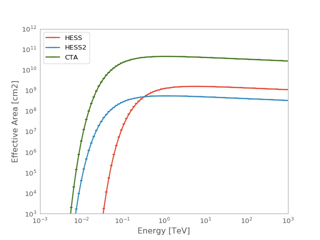

EffectiveAreaTable¶
-
class
gammapy.irf.EffectiveAreaTable(energy_lo, energy_hi, data, meta=None)[source]¶ Bases:
objectEffective area table.
TODO: Document
Parameters: energy_lo :
QuantityLower bin edges of energy axis
energy_hi :
QuantityUpper bin edges of energy axis
data :
QuantityEffective area
Examples
Plot parametrized effective area for HESS, HESS2 and CTA.
import numpy as np import matplotlib.pyplot as plt import astropy.units as u from gammapy.irf import EffectiveAreaTable energy = np.logspace(-3, 3, 100) * u.TeV for instrument in ['HESS', 'HESS2', 'CTA']: aeff = EffectiveAreaTable.from_parametrization(energy, instrument) ax = aeff.plot(label=instrument) ax.set_yscale('log') ax.set_xlim([1e-3, 1e3]) ax.set_ylim([1e3, 1e12]) plt.legend(loc='best') plt.show()
(Source code, png, hires.png, pdf)
Find energy where the effective area is at 10% of its maximum value
>>> import numpy as np >>> from gammapy.irf import EffectiveAreaTable >>> import astropy.units as u >>> energy = np.logspace(-1,2) * u.TeV >>> aeff_max = aeff.max_area >>> print(aeff_max).to('m2') 156909.413371 m2 >>> ener = aeff.find_energy(0.1 * aeff_max) >>> print(ener) 0.185368478744 TeV
Attributes Summary
energymax_areaMaximum effective area Methods Summary
evaluate_fill_nan(**kwargs)Modified evaluate function. find_energy(aeff)Find energy for given effective area. from_hdulist(hdulist[, hdu])from_parametrization(energy[, instrument])Get parametrized effective area. from_table(table)ARF reader plot([ax, energy, show_energy])Plot effective area. read(filename[, hdu])to_hdulist()to_sherpa(name)Return DataARFto_table()Convert to Table.write(filename, **kwargs)Attributes Documentation
-
energy¶
-
max_area¶ Maximum effective area
Methods Documentation
-
evaluate_fill_nan(**kwargs)[source]¶ Modified evaluate function.
Calls
gammapy.utils.nddata.NDDataArray.evaluate()and replaces possible nan values. Below the finite range the effective area is set to zero and above to value of the last valid note. This is needed since other codes, e.g. sherpa, don’t like nan values in FITS files. Make sure that the replacement happens outside of the energy range, where theEffectiveAreaTableis used.
-
find_energy(aeff)[source]¶ Find energy for given effective area.
A linear interpolation is performed between the two nodes closest to the desired effective area value.
TODO: Move to
NDDataArrayParameters: aeff :
QuantityEffective area value
Returns: energy :
QuantityEnergy corresponding to aeff
-
classmethod
from_parametrization(energy, instrument='HESS')[source]¶ Get parametrized effective area.
Parametrizations of the effective areas of different Cherenkov telescopes taken from Appendix B of Abramowski et al. (2010), see http://adsabs.harvard.edu/abs/2010MNRAS.402.1342A .
\[A_{eff}(E) = g_1 \left(\frac{E}{\mathrm{MeV}}\right)^{-g_2}\exp{\left(-\frac{g_3}{E}\right)}\]Parameters: energy :
QuantityEnergy binning, analytic function is evaluated at log centers
instrument : {‘HESS’, ‘HESS2’, ‘CTA’}
Instrument name
-
{kind=link}
{kind=link}